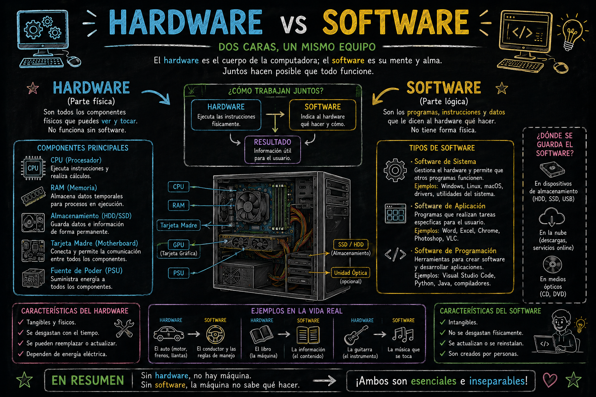
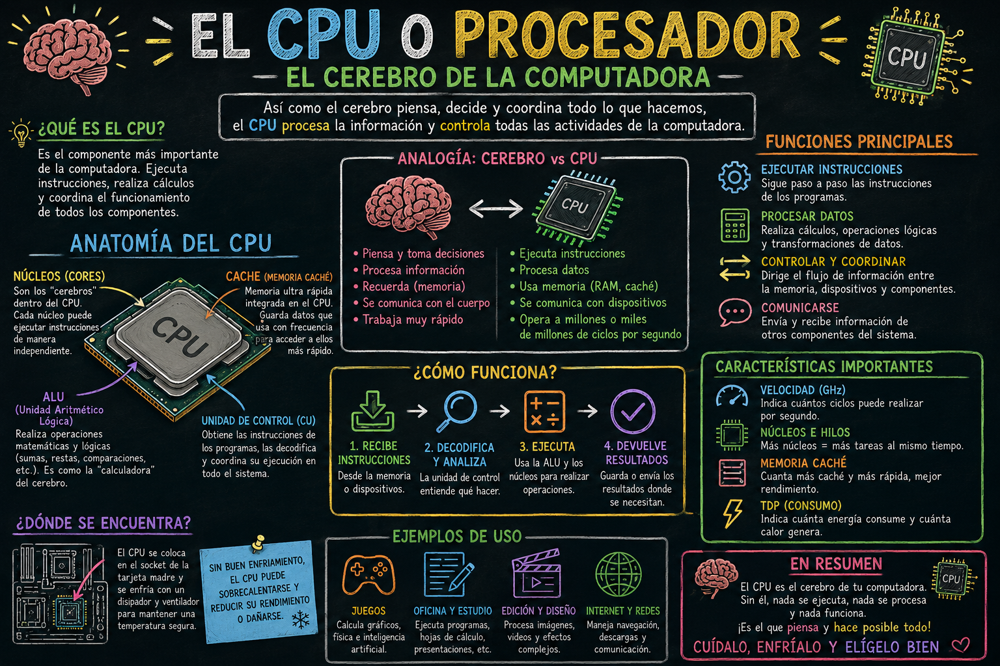
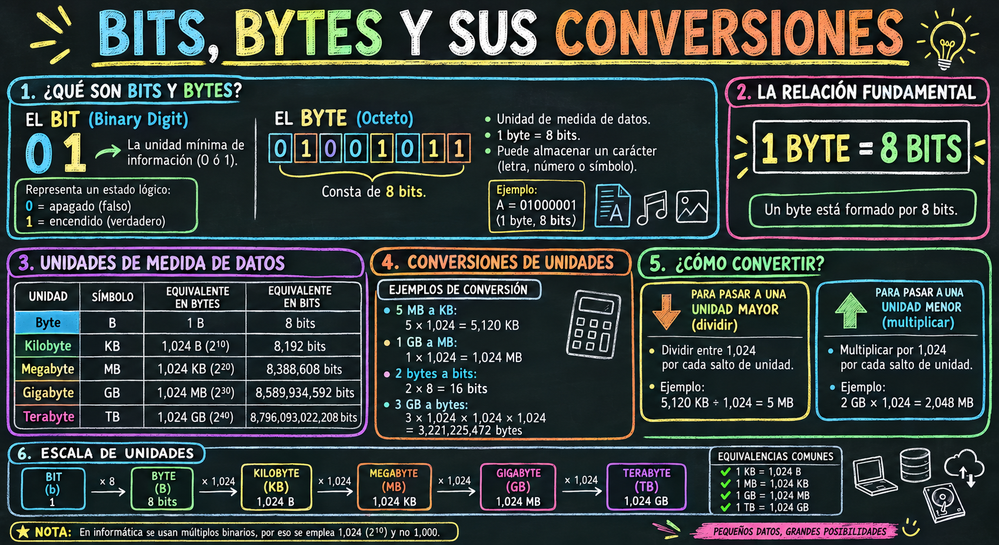
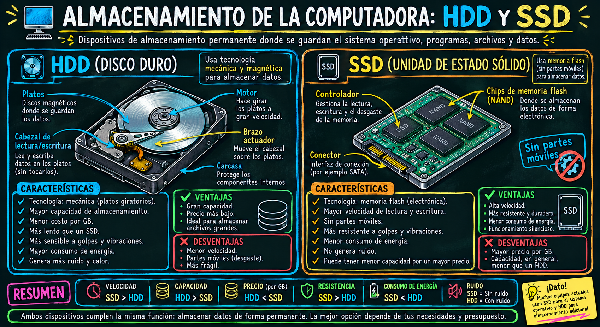
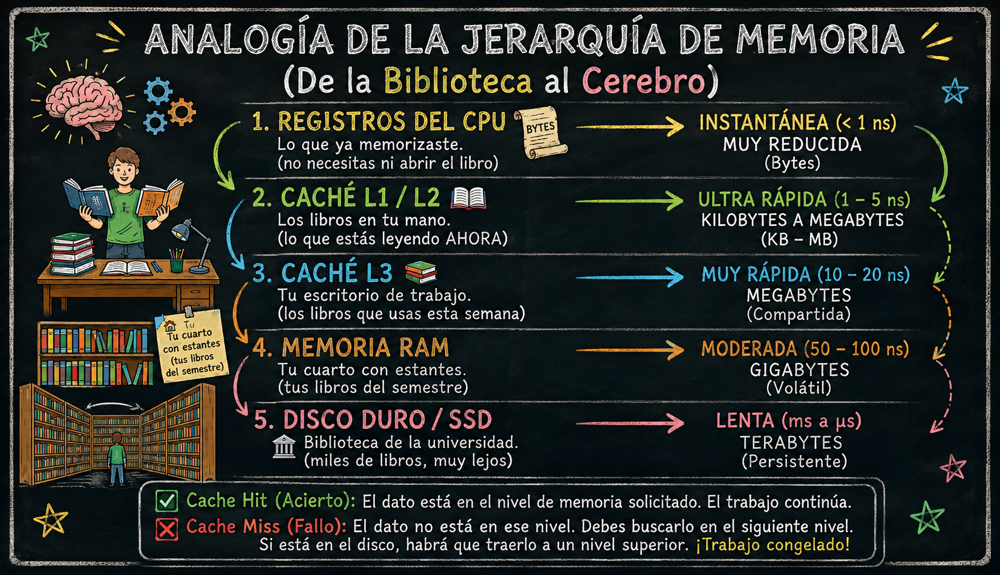
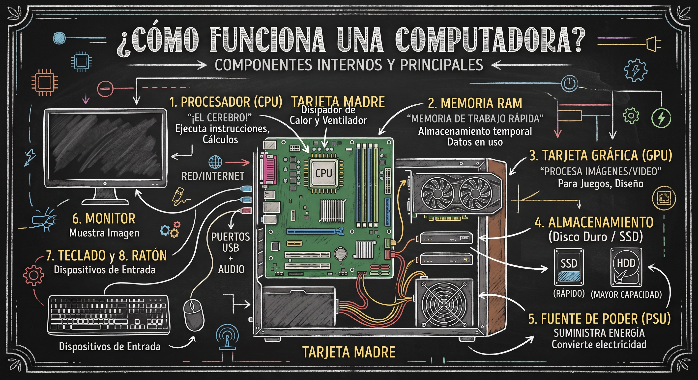
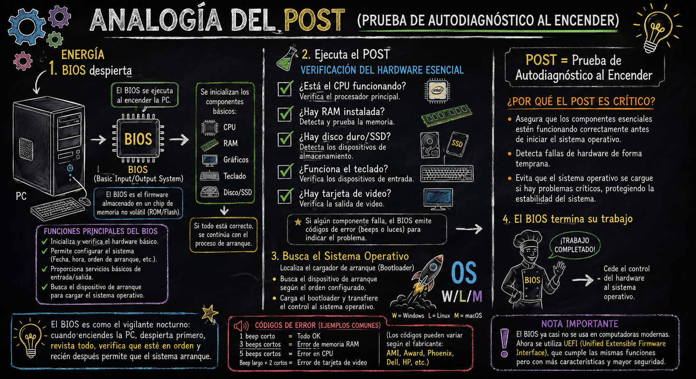
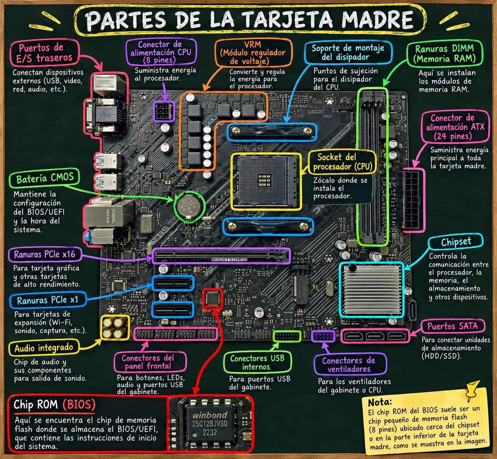
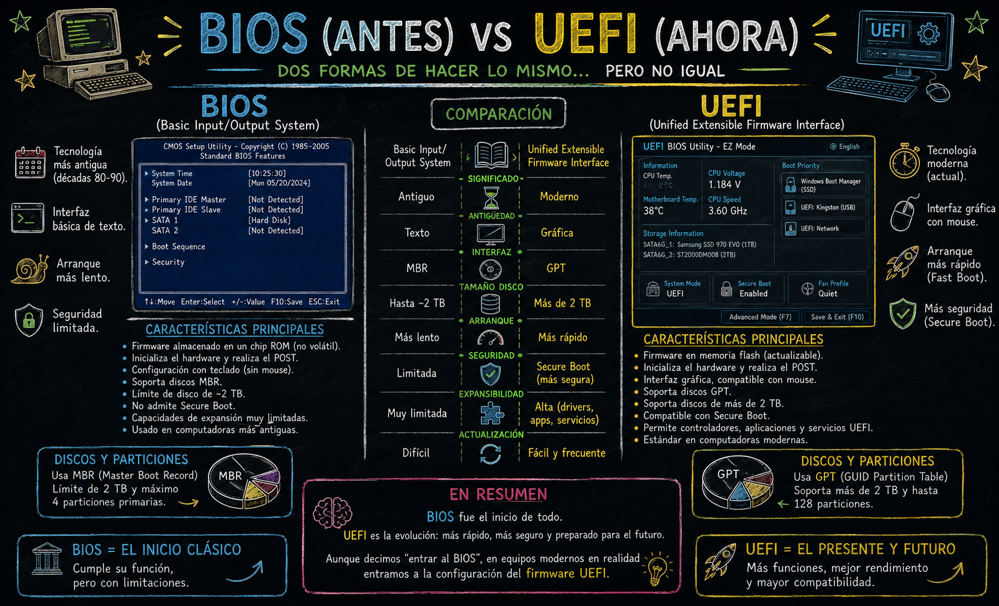
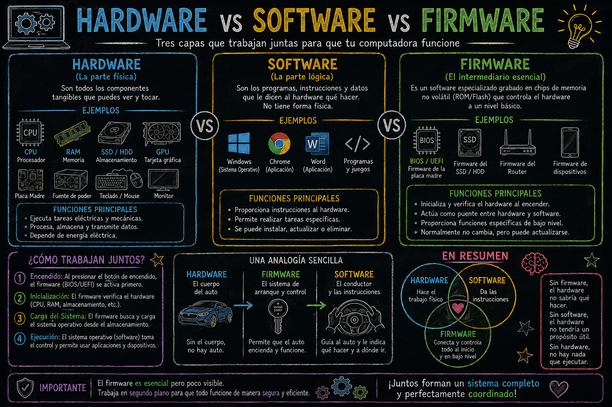

3 Introducción a los Componentes de una Computadora
Fecha: 01 de septiembre, 2026
Objetivos:
- Identificar los componentes internos principales y complementarios
- Diferenciar entre Hardware y Software
3.1 BLOQUE 1 — Hardware vs Software

Tabla de las diferencias:
| Característica | Hardware | Software |
| Definición | Componentes físicos y materiales. | Conjunto de programas, instrucciones y datos. |
| Tangibilidad | Es tangible (se puede tocar, ver y sostener). | Es intangible (código digital, no se puede tocar). |
| Función | Ejecutar las tareas físicas y almacenar/procesar datos electrónicamente. | Dar órdenes al hardware y permitir la interacción con el usuario. |
| Durabilidad / Desgaste | Se desgasta con el tiempo y el uso (fallas mecánicas o térmicas). | No se desgasta físicamente, aunque puede volverse obsoleto o presentar bugs. |
| Mantenimiento | Se repara limpiando o reemplazando piezas físicas. | Se actualiza, se corrigen errores mediante parches o se reinstala. |
| Infección por Virus | No puede ser infectado directamente por virus informáticos. | Puede ser infectado por malware o virus. |
| Ejemplos | Procesador (CPU), Tarjeta Madre, Monitor, Teclado, Disco SSD. | Sistema Operativo (Windows, Linux), Navegador Web, Python, R, Office. |
3.2 ¿Cómo interactúan entre sí?
El hardware y el software no pueden funcionar de manera independiente:
El Hardware necesita al Software: Sin un sistema operativo o programas, una computadora es solo una estructura de metal y silicio sin capacidad de realizar tareas útiles.
El Software necesita al Hardware: Las instrucciones del código no pueden ejecutarse ni procesarse si no existe un procesador, memoria o pantalla donde mostrar los resultados.
3.3 BLOQUE 2 — Componentes Internos Principales
CPU — Procesador
- 🧠 El “cerebro” de la computadora
- Ejecuta instrucciones: fetch → decode → execute
- Características clave:
- Núcleos (cores): más núcleos = más tareas simultáneas
- Velocidad en GigaHertz (GHz)
- Memoria Caché (L1, L2, L3)
- Marcas: Intel (Core i3/i5/i7/i9) y AMD (Ryzen)
- Analogía: “Es como el chef de un restaurante: recibe pedidos, los procesa y entrega resultados” 👨🍳

Es la unidad que mide la velocidad del reloj de un procesador, es decir, cuántas veces por segundo puede ejecutar un ciclo de instrucciones.
1 Hz = 1 ciclo por segundo
1 KHz = 1,000 ciclos por segundo
1 MHz = 1,000,000 ciclos por segundo
1 GHz = 1,000,000,000 ciclos por segundo
⬆️
¡MIL MILLONES de ciclos por segundo!Un ciclo es el latido del procesador, marcado por un reloj interno llamado Clock
RAM — Memoria de Acceso Aleatorio
- 📋 Memoria de trabajo temporal
- Almacena lo que está en uso en este momento
- Se borra al apagar la computadora
- Medida en gigabyte (GB) (8GB, 16GB, 32GB…)
- Tipos: DDR4, DDR5
- Analogía: “Es el escritorio donde tienes todo lo que estás usando ahora” 🗂️

Almacenamiento — HDD y SSD
💾 Memoria permanente de la computadora
HDD (Disco Duro):
- Mecánico, con platos giratorios
- Mayor capacidad, menor precio
- Más lento y frágil
SSD (Unidad de Estado Sólido):
- Sin partes móviles
- Mucho más rápido
- Mayor durabilidad
Analogía: “Es el cajón donde guardas todo aunque apagues la luz” 🗄️

Es una memoria ultrarrápida y pequeña que vive dentro del CPU y guarda temporalmente los datos que usa con más frecuencia, para no tener que ir a buscarlos a la RAM cada vez.
Primero entendamos por qué existe:
Velocidad de los componentes:
🧠 CPU → opera a 4 GHz (ultrarrápido)
💾 RAM → opera a ~50 GHz (rápido)
💿 SSD → opera a ~500 MB/s (lento)
📀 HDD → opera a ~100 MB/s (muy lento)
⚠️ El problema:
El CPU es TAN rápido que si tuviera que esperar a que la RAM le diera datos... perdería el 99% de su tiempo ESPERANDO 😴💡 “La caché existe para que el CPU nunca tenga que esperar”
3.3.1 Analogía

Escala de tiempo:
1 segundo = 1 s
1 milisegundo = 0.001 s (ms) → parpadeo de un ojo
1 microsegundo = 0.000001 s (µs) → cámara de alta velocidad
1 nanosegundo = 0.000000001 s (ns) → velocidad del CPU ⚡🔑 “Mientras más cerca está la información del CPU, más rápido puede trabajar”
Tarjeta Madre — Motherboard
- 🔌 El “esqueleto” que conecta todo
- Contiene los buses de datos que comunican componentes
- Incluye: slots para RAM, CPU, GPU, almacenamiento
- Tiene el BIOS/UEFI: primer software que corre al encender
- Fabricantes: ASUS, MSI, Gigabyte
GPU (Graphics Processing Unit) - unidad de procesamiento gráfico
Es el CHIP procesador gráfico; Solo el cerebro, el procesador en sí.
- Ejemplo: el chip “AD102” de NVIDIA → RTX 4090.
Tarjeta Gráfica
- Es el PRODUCTO COMPLETO:
- GPU (chip procesador)
- PCB (Placa de Circuito Impreso): es donde van soldados todos los componentes
- GRAM (Graphics Random Access Memory): módulos de memoria, también conocida como VRAM (Video RAM) → texturas
- 🔵 Condensadores: Estabilizan y filtran la energía eléctrica
- 🟡 Inductores: Regulan el voltaje que llega al GPU
- 🔴 MOSFETs: Controlan el flujo de corriente
- ⚫ Resistencias: Limitan y controlan la corriente
- 🟢 VRM (Voltage Regulator Module): Convierte y regula el voltaje para el GPU
- Tuberías de calor: Son tubos de cobre huecos rellenos de líquido especial
- Ventiladores (o blower)
- Carcasa
- 🎮 Procesa imágenes, video y gráficos 3D
- Tiene su propio procesador (miles de núcleos pequeños)
- Puede ser:
- Integrada: dentro del CPU (uso básico)
- Dedicada: tarjeta independiente (gaming, diseño, IA)
- Marcas: NVIDIA (GeForce), AMD (Radeon)
- Hoy en día: clave para Machine Learning e IA 🤖
Fuente de Poder — PSU
- ⚡ Convierte la corriente alterna (CA) en corriente directa (CD)
- Alimenta todos los componentes
- Se mide en Watts (500W, 750W, 1000W…)
- Certificaciones de eficiencia: 80 Plus Bronze/Gold/Platinum
- Un componente subestimado pero crítico para la estabilidad
3.4 BLOQUE 3 — Componentes Complementarios (Periféricos y Accesorios)
Son aquellos dispositivos que se conectan a la computadora para interactuar con ella, introducir o recibir datos, o mejorar sus funciones, pero que no impiden que el sistema interno funcione.
3.4.1 Periféricos de Entrada
Permiten al usuario enviar datos o instrucciones a la computadora:
- Teclado y Ratón (Mouse): Los medios principales para interactuar con el sistema.
- Micrófono y Cámara Web: Para videollamadas, grabación de audio y conferencias.
- Escáner / Lectores de códigos: Para digitalizar documentos físicos.
3.4.2 Periféricos de Salida
Muestran o entregan los resultados procesados por la computadora:
- Monitor / Pantalla: Muestra la interfaz gráfica y la información visual (esencial para la interacción humana, aunque técnicamente el equipo puede encender sin él).
- Bocinas o Audífonos: Para la reproducción de audio.
- Impresora: Para trasladar información digital a formato físico.
3.4.3 C. Complementos Internos y Unidades de Expansión
- Sistemas de Enfriamiento Extra (Líquido o Ventiladores adicionales): Mantienen las temperaturas óptimas en equipos de alto rendimiento.
- Tarjetas de Red / Wi-Fi o Bluetooth: Añaden o mejoran la conectividad inalámbrica.
- Lectores de discos (CD/DVD/Blu-ray): Cada vez menos comunes, útiles para leer formatos físicos antiguos.

3.5 BLOQUE 4 — Firmware
Es un software permanente grabado dentro de un chip de hardware que controla cómo funciona ese dispositivo.
3.5.1 ¿Qué es el BIOS?
BIOS = Basic Input Output System Sistema Básico de Entrada y Salida
“Es el primer programa que se ejecuta cuando enciendes tu computadora, ANTES que cualquier sistema operativo”
¿Dónde vive el BIOS?
- No está en el disco duro
- No está en la RAM
- No está en el CPU
- Vive en un chip especial de la Tarjeta Madre llamado ROM (Read Only Memory)
“Al estar en ROM, el BIOS no se borra aunque apagues la computadora”
Su trabajo principal es POST:
Power On Self Test = Prueba de Autodiagnóstico al Encender
3.5.2 ¿Sabías que la Motherboard tiene una pequeña batería?
Esta batería mantiene:
- ⏰ La fecha y hora
- ⚙️ La configuración del BIOS
- 🔌 Los ajustes guardados
Si se agota → la computadora pierde la hora y configuración cada vez que se apaga 😱.

“El BIOS clásico fue reemplazado por UEFI en computadoras modernas”
| Característica | BIOS (antiguo) | UEFI (moderno) |
|---|---|---|
| 📅 Año | 1975 | 2005 - presente |
| 🖥️ Interfaz | Solo texto | Gráfica con mouse |
| 💾 Disco máximo | 2 TB | 9 ZB (sin límite práctico) |
| ⚡ Velocidad arranque | Lento | Muy rápido |
| 🔐 Seguridad | Básica | Secure Boot |
| 🖱️ Mouse | ❌ No | ✅ Sí |

En resumen …
